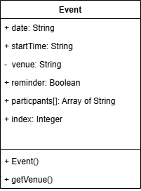

Technical Explanation
This program demonstrates how to create (instantiate) objects from a class definition and test that the objects are created correctly. Once a class template has been defined, the program shows how to call the class as a constructor to create instance objects with specific data. The program demonstrates passing parameters to the constructor, storing those values as properties in the new object, and retrieving object data through getter methods. These skills are fundamental to using object-oriented design: defining the blueprint (class) and then creating actual working copies (instances) from that blueprint.
Analysis
### End User Requirements
1. The user wants to create objects that represent specific event records with actual data.
2. The user wants to verify that object properties are set correctly during creation.
3. The user wants to access object properties to retrieve stored data.
4. The user wants to create multiple independent objects, each with different data.
### Functional Requirements
#### Advanced Higher concepts
The solution is required to:
FR1 Instantiate objects from a developer-defined class.
FR2 Pass parameters to constructor to initialize object properties.
FR3 Access object data using getter methods.
FR4 Verify that each object instance maintains independent data.
#### Integration
The solution is required to:
FR5 Import and use a class defined in another module or location.
FR6 Create and manage multiple instances without data corruption or mixing.
FR7 Display or output object data to verify correct instantiation.
#### Additional functional requirements
The solution is required to:
FR8 Demonstrate constructor parameter passing and mapping to properties.
FR9 Show calling getter methods to retrieve values from created objects.
FR10 Verify property independence between different object instances.
FR11 Display clear output showing successful object creation and property values.
---
Design
Class name: Event
This program introduces the first method:
getVenue(). A getter method returns the value of a property without allowing it to be changed directly. The diagram also shows + Event(), which is the constructor method for the class. This is the method that runs when a new Event object is instantiated. Notice that venue now has a minus sign (−) in the UML diagram instead of a plus sign (+). In UML, − means private and + means public. This distinction is covered properly in the Encapsulation section later — for now, it simply signals that getVenue() is the intended way to read the venue value.

Implementation
[Program 2 - instantiate and test.py](./Program%202%20%E2%80%93%20instantiate%20and%20test.py)
SQA-RL:
```
CLASS Event
DECLARE startDate AS STRING
DECLARE startTime AS STRING
DECLARE venue AS STRING
DECLARE reminder AS BOOLEAN
DECLARE participants AS ARRAY[1:20] OF STRING
DECLARE index AS INTEGER
FUNCTION getVenue() RETURNS STRING
RETURN venue
END FUNCTION
END CLASS
DECLARE item1 AS NEW Event("13/04/18", "0900", "Main Office", TRUE)
SEND item1.getVenue() TO DISPLAY
```
The **constructor** shown in the UML as
+ Event() is called when creating an object. In SQA-RL this happens through NEW Event(...). It builds a new instance of the class and sets its properties to the values passed in. Each call to the constructor creates a completely independent object, so changing item1 has no effect on any other object created from the same class.
### Notes
- Each call to the class constructor creates a new, independent object
- Properties of one object are not affected by changes to another object
- The class definition is reusable—many objects can be created from the same class
---Python Code
class Event:
def __init__(self, startDate, startTime, venue, reminder):
self.date = str(startDate) #String
self.startTime = str(startTime) #String
self.venue = str(venue) #String
self.reminder = reminder if isinstance(reminder, bool) else str(reminder).strip().lower() in ("true", "1", "yes", "y") #Boolean (don't use bool(reminder): bool("False") is True)
self.participants = [""]*20 #Array of String
self.index = int(0) #Integer
def getVenue(self):
return self.venue
item1 = Event("13/04/18", "0900", "Main Office", True)
print (item1.getVenue())
Test Plan
| Test Case | Input | Expected Output | Evidence |
|---|---|---|---|
| Object instantiation | Create Event object | Object created without error | Before: NameError / After: Object created |
| Constructor parameters passed | Create object with specific values | Object properties contain passed values | Before: Properties undefined / After: Values stored |
| Multiple independent instances | Create two Event objects with different data | Each object has its own distinct values | Before: Data shared/overwritten / After: Independent values |
| Getter method access | Call getVenue() | Correct value returned from object | Before: AttributeError / After: Value retrieved |
| Object comparison | Create two instances with same data | Objects are distinct (different memory locations) | Before: Objects compared as equal / After: Distinct objects |